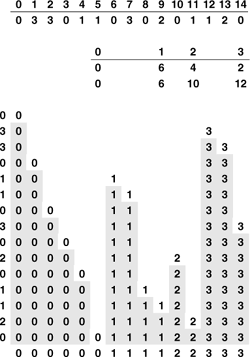

C++ Programming Robert Sedgewick - Princeton University Addison Wesley Professional Algorithms in C++, Parts 1–4: Fundamentals, Data Structure, Sorting, Searching, Third Edition
6.10. Key-Indexed Counting
A number of sorting algorithms gain efficiency by taking advantage of special properties of keys. For example, consider the following problem: Sort a file of N items whose keys are distinct integers between 0 and N – 1. We can solve this problem immediately, using a temporary array b, with the statement
for (i = 0; i < N; i++) b[key(a[i])] = a[i]
That is, we sort by using the keys as indices, rather than as abstract items that are compared. In this section, we consider an elementary method that uses key indexing in this way to sort efficiently when the keys are integers in a small range.
If all the keys are 0, sorting is trivial, but now suppose that there are two distinct key values 0 and 1. Such a sorting problem might arise when we want to separate out the items in a file that satisfy some (perhaps complicated) acceptance test: we take the key 0 to mean "accept" and the key 1 to mean "reject." One way to proceed is to count the number of 0s, then to make a second pass through the input a to distribute its items to the temporary array b, using an array of two counters, as follows. We start with 0 in cnt[0] and the number of 0 keys in the file cnt[1], to indicate that there are no keys that are less than 0 and cnt[1] keys that are less than 1 in the file. Clearly, we can fill in the b array by putting 0s at the beginning (starting at b[[cnt[0]], or b[0]) and 1s starting at b[cnt[1]. That is, the code
for (i = 0; i < N; i++) b[cnt[a[i]]++] = a[i];
serves to distribute the items from a to b. Again, we get a fast sort by using the keys as indices (to pick between cnt[0] and cnt[1]).
This approach generalizes immediately. A more realistic problem in the same spirit is this: Sort a file of N items whose keys are integers between 0 and M –1. We can extend the basic method in the previous paragraph to an algorithm called key-indexed counting, which solves this problem effectively if M is not too large. Just as with two key values, the idea is to count the number of keys with each value, and then to use the counts to move the items into position on a second pass through the file. First, we count the number of keys of each value: then, we compute partial sums to get counts of the number of keys less than or equal to each value. Then, again just as we did when we had two key values, we use these counts as indices for the purpose of distributing the keys. For each key, we view its associated count as an index pointing to the end of the block of keys with the same value, use the index to distribute the key into b, and decrement. This process is illustrated in Figure 6.17. An implementation is given in Program 6.17.
First, we determine how many keys of each value there are in the file: In this example there are six 0s, four 1s, two 2s, and three 3s. Then, we take partial sums to find the number of keys less than each key: 0 keys are less than 0, 6 keys are less than 1, 10 keys are less than 2, and 12 keys are less than 3 (table in middle). Then, we use the partial sums as indices in placing the keys into position: The 0 at the beginning of the file is put into location 0; we then increment the pointer corresponding to 0, to point to where the next 0 should go. Then, the 3 from the next position on the left in the file is put into location 12 (since there are 12 keys less than 3); its corresponding count is incremented; and so forth.

Program 6.17. Key-indexed counting|
The first for loop initializes the counts to 0; the second for loop sets the second counter to the number of 0s, the third counter to the number of 1s, and so forth. Then, the third for loop simply adds these numbers to produce counts of the number of keys less than or equal to the one corresponding to the count. These numbers now give the indices of the end of the part of the file where keys belong. The fourth for loop moves the keys into an auxiliary array b according to these indices, and the final loop moves the sorted file back into a. The keys must be integers less than M for this code to work, although we can easily modify it to extract such keys from more complex items (see Exercise 6.77).
void distcount(int a[], int l, int r)
{ int i, j, cnt[M];
static int b[maxN];
for (j = 0; j < M; j++) cnt[j] = 0;
for (i = l; i <= r; i++) cnt[a[i]+1]++;
for (j = 1; j < M; j++) cnt[j] += cnt[j-1];
for (i = l; i <= r; i++) b[cnt[a[i]]++] = a[i];
for (i = l; i <= r; i++) a[i] = b[i];
}
|
Property 6.12. Key-indexed counting is a linear-time sort, provided that the range of distinct key values is within a constant factor of the file size|
Each item is moved twice, once for the distribution and once to be moved back to the original array; and each key is referenced twice, once to do the counts and once to do the distribution. The two other for loops in the algorithm involve building the counts, and will contribute insignificantly to the running time unless the number of counts becomes significantly larger than the file size.
|
If huge files are to be sorted, the auxiliary array b can present memory-allocation problems. We can modify Program 6.17 to complete the sort in place (avoiding the need for an auxiliary array), using a method similar to that used in Program 6.14. This operation is closely related to the basic methods that we shall be discussing in Chapters 7 and 10, so we defer it to Exercises 12.16 and 12.17 in Section 12.3. As we shall see in Chapter 12, this space savings comes at the cost of the stability property of the algorithm, and thus limits the algorithm's utility because applications involving large numbers of duplicate keys often have other associated keys, whose relative order should be preserved. We shall see a particularly important example of such an application in Chapter 10.
Exercises |  6.74 Give a specialized version of key-indexed counting for sorting files where elements can take on only one of three values (a, b, or c). 6.74 Give a specialized version of key-indexed counting for sorting files where elements can take on only one of three values (a, b, or c).
| | 6.75 Suppose that we use insertion sort on a randomly ordered file where elements have only one of three values. Is the running time linear, quadratic, or something in between? | |  6.76 Show how key-indexed counting sorts the file A B R A C A D A B R A. 6.76 Show how key-indexed counting sorts the file A B R A C A D A B R A.
| | 6.77 Implement key-indexed counting for items that are potentially large records with integer keys from a small range. | | 6.78 Implement key-indexed counting as a pointer sort. |
|